Mapping histone marks and DNA-binding proteins in situ: low background, few cells, few reads, and a different QC
ChIP-seq: the assay, TFs vs histone marks showed how chromatin immunoprecipitation finds where a protein or a mark sits. CUT&RUN (2017) and CUT&Tag (2019) answer the same question with a different trick: bring the enzyme to the antibody inside the nucleus, so only the target’s neighbourhood is cut.
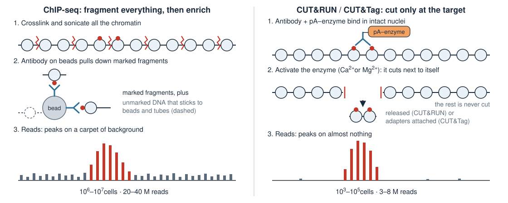
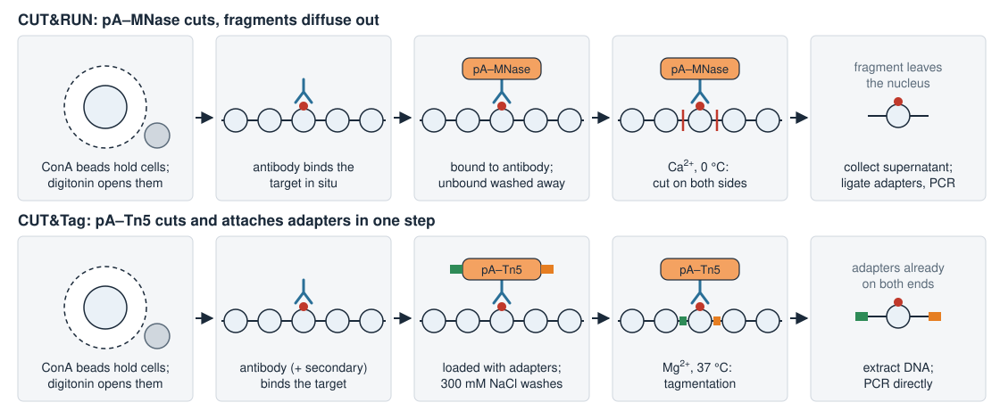
| ChIP-seq | CUT&RUN | CUT&Tag | |
|---|---|---|---|
| fixation | usually formaldehyde | none (light fixation optional) | none (light fixation optional) |
| fragmentation | sonication or MNase, whole genome | pA–MNase at the target | pA–Tn5 at the target |
| cells per sample | 106–107 | 103–105 | 102–105, single cells |
| reads for a profile | 20–40 M | 3–8 M | 2–5 M |
| control | input DNA | IgG (or none) | IgG (or none) |
| best for | everything, incl. TFs; huge reference (ENCODE) | TFs and histone marks | histone marks; low input |
| library | ligation | ligation | Tn5 adapters + PCR |
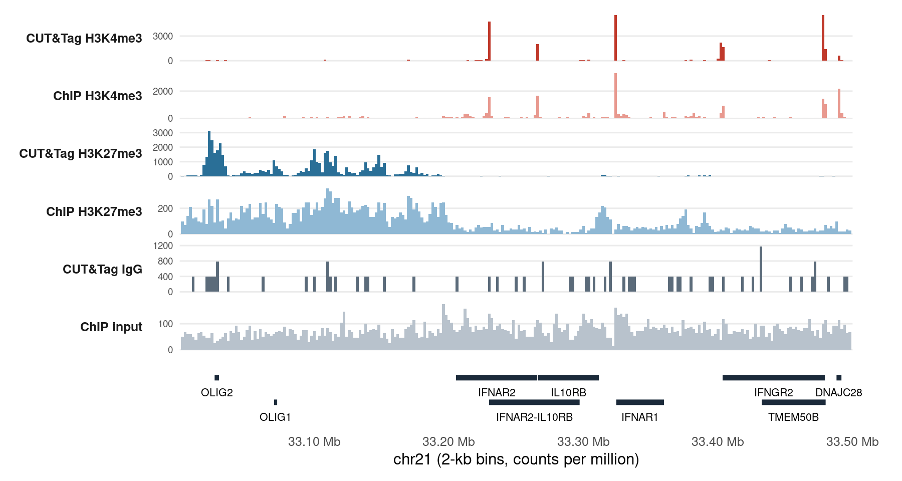
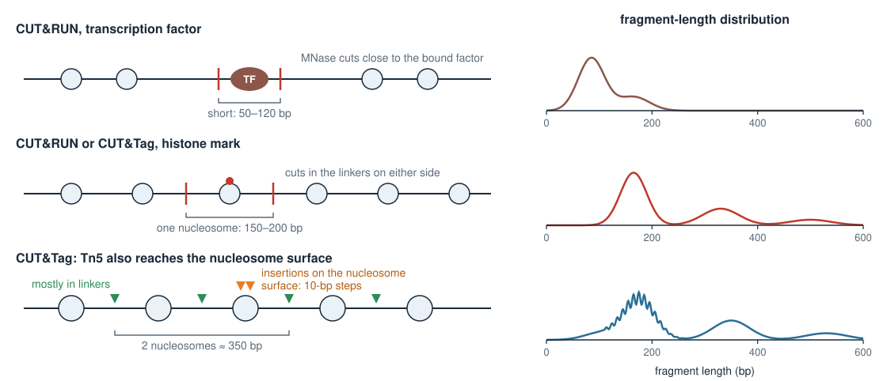
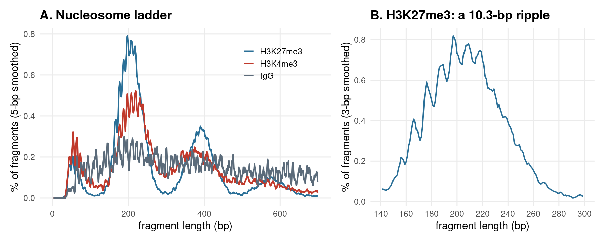
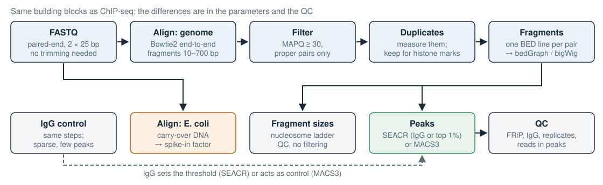
--very-sensitive, fragments 10–700 bp, --no-mixed --no-discordant: only properly aligned pairs.bowtie2 -p 8 --end-to-end --very-sensitive --no-mixed --no-discordant -I 10 -X 700 \
-x hg38_chr21_chrM -1 R1.fastq.gz -2 R2.fastq.gz 2> h3k27me3.bowtie2.log \
| samtools fixmate -m -u - - | samtools sort -o h3k27me3.raw.bam
samtools view -u -q 30 -f 2 -F 1804 h3k27me3.raw.bam chr21 | ... \
| samtools markdup -s - h3k27me3.bam # mark duplicates, keep them| H3K4me3 | H3K27me3 | IgG | |
|---|---|---|---|
| read pairs in our files | 25 102 | 58 803 | 293 653 |
| fragments on chr21 after filters | 17 380 | 45 130 | 16 941 |
| duplicate fragments | 1 225 (7%) | 2 356 (5%) | 14 397 (85%) |
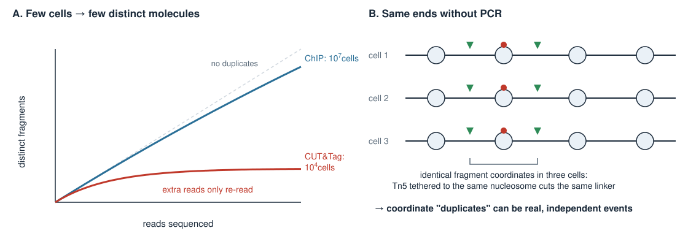
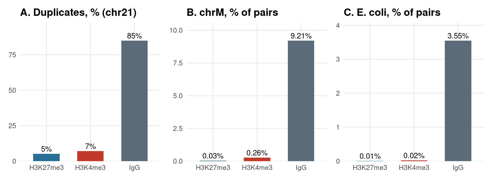
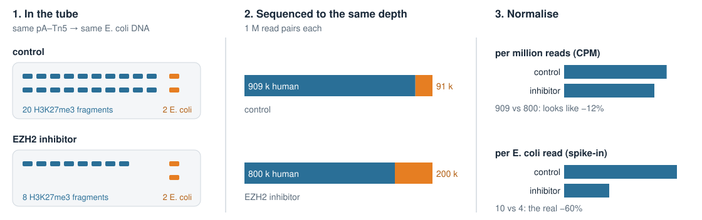
| H3K4me3 | H3K27me3 | IgG | |
|---|---|---|---|
| all read pairs (whole library) | 1 581 710 | 2 984 630 | 2 127 635 |
| E. coli pairs | 355 | 231 | 75 492 |
| E. coli, % of the library | 0.022% | 0.008% | 3.55% |
| scale factor 10 000 / E. coli | 28.2 | 43.3 | 0.13 |
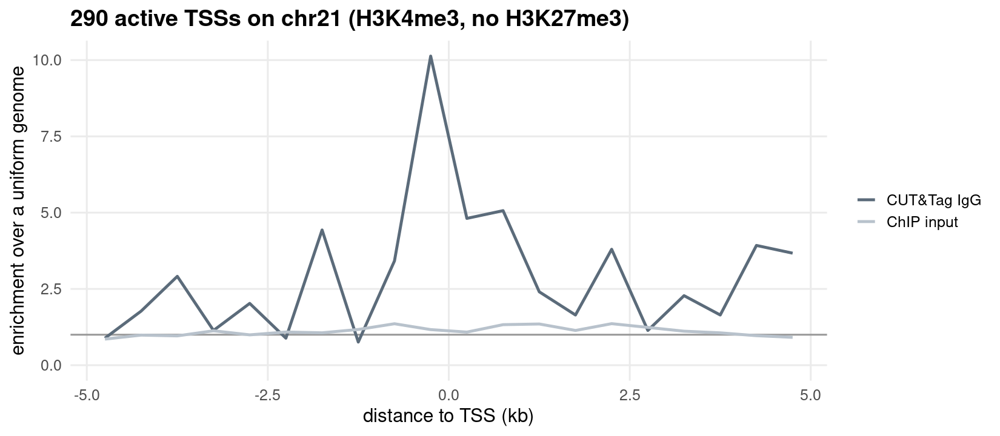
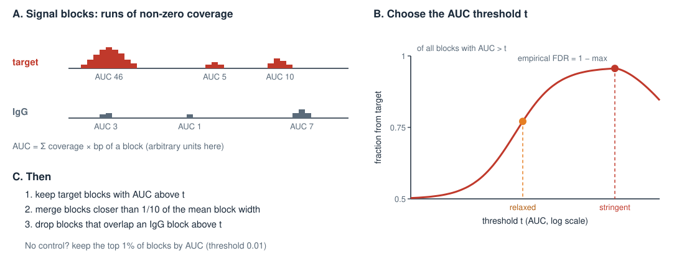
# fragments -> bedGraph (zero-coverage regions omitted)
bedtools genomecov -bg -i h3k4me3.frag.bed -g chrom.sizes > h3k4me3.bedgraph
# SEACR: with the IgG as control, or the top 1% of blocks
bash SEACR_1.3.sh h3k4me3.bedgraph igg.bedgraph norm stringent h3k4me3_seacr_igg
bash SEACR_1.3.sh h3k4me3.bedgraph 0.01 non stringent h3k4me3_seacr_top1
# MACS3 on the fragments, IgG as control
macs3 callpeak -t h3k4me3.bam -c igg.bam -f BAMPE -g 4.0e7 --keep-dup all -q 0.01 -n h3k4me3_macs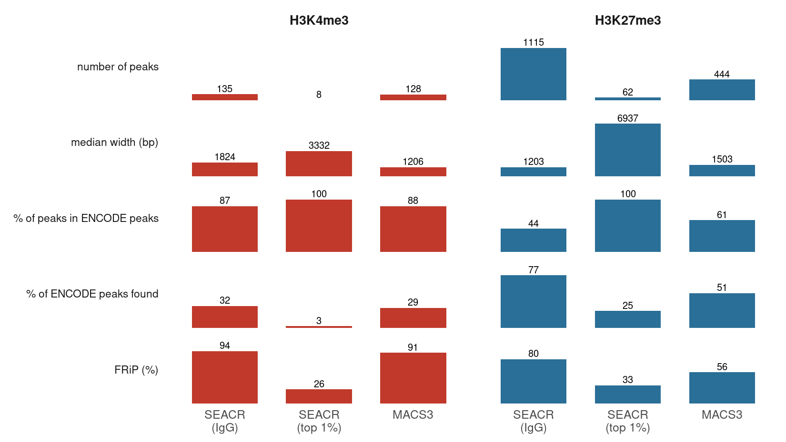
--broad lies in between.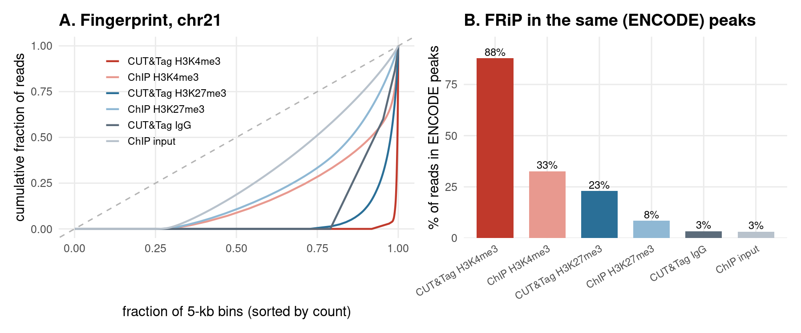
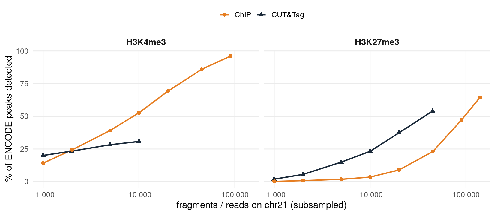
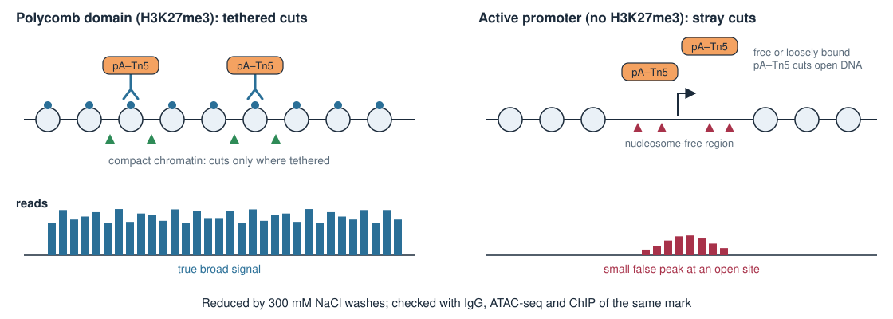
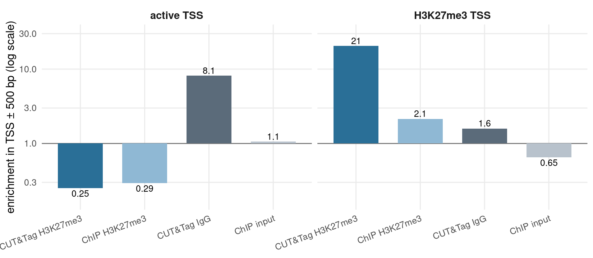
| check | ChIP-seq habit | CUT&RUN / CUT&Tag |
|---|---|---|
| depth | 20–45 M reads | 2–8 M is usually enough; watch saturation |
| duplicates | remove; high rate = bad library | expected; report, keep for histone marks |
| control | input, needed for the local λ | IgG: sparse; shows open-chromatin background |
| fragment sizes | (single-end: not measured) | nucleosome ladder; < 120 bp for TFs (CUT&RUN) |
| signal-to-noise | FRiP (ENCODE: > 1% for TF ChIP), fingerprint | FRiP usually much higher; compare with IgG |
| normalisation | input, spike-in chromatin | E. coli carry-over or added spike-in |
| replicates | two biological replicates, IDR | the same: two biological replicates, correlation of signal in bins |
| pitfall | what happens | fix |
|---|---|---|
| removing all duplicates of an abundant mark | signal compressed at strong sites | keep them; report the rate |
| treating IgG like input in MACS3 | λ from an almost empty track | SEACR, or a strict MACS3 cutoff and IgG-overlap filter |
| CPM after a global change | the loss of a mark is hidden | spike-in (E. coli or added), checked for consistency |
| trusting small peaks at active promoters | Tn5 open-chromatin bias | IgG, ATAC-seq, ChIP of the same mark |
| CUT&Tag for a weakly bound TF | high-salt washes strip it | CUT&RUN or ChIP |
| over-sequencing | 90% duplicates, no new information | look at saturation; pool libraries sensibly |
| topic | key idea |
|---|---|
| principle | antibody-tethered enzyme cuts in situ; uncut DNA never enters the library |
| CUT&RUN | pA–MNase + Ca2+, fragments diffuse out; good for TFs |
| CUT&Tag | pA–Tn5 with adapters + Mg2+, PCR directly; good for histone marks, low input |
| data | 2–8 M reads, high FRiP, fragment ladder, many (often real) duplicates |
| spike-in | E. coli carry-over DNA: scale factor ∝ 1 / E. coli fragments |
| control | IgG: sparse, shows untethered (open-chromatin) cutting |
| peaks | SEACR: AUC threshold from target vs IgG blocks; MACS3 also used |
| caveats | Tn5 open-chromatin bias; salt washes vs TF binding; small reference data sets |
Not required reading and not examined. For those who want the primary literature.